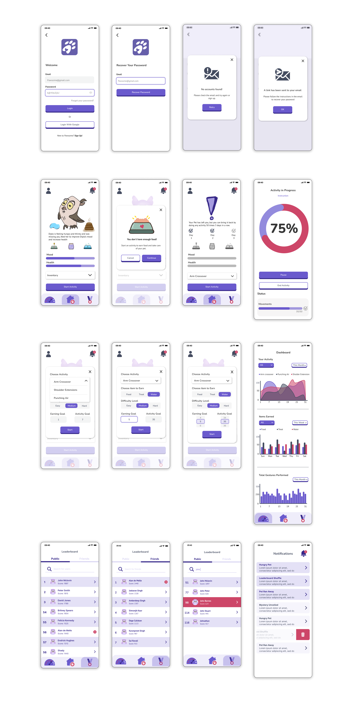

Pawsome
Mobile App
Pawsome is a mobile app that gamifies fitness tracking and virtual pet ownership. By adopting and caring for virtual pets, users stay motivated to exercise regularly and experience the joy of pet companionship. The app fosters community through social features, allowing users to connect with friends, compare achievements, and track progress. Pawsome transforms exercise routines into an enjoyable and fulfilling experience while providing a virtual pet companion that brings comfort, entertainment, and emotional connection.

Project Information
⏰ Project duration : 13 Weeks
ü¶∏ü誂Äç‚ôÄÔ∏è My roles: UI/UX Designer & Project Manager
üåü Team size: 4 Developers & 4 Designers
Problem
The problem Pawsome aims to address includes the lack of motivation to exercise regularly and the desire for pet ownership in various scenarios. Many individuals struggle with finding the motivation to maintain a consistent physical activity routine, while others face restrictions or allergies that prevent them from having a physical pet.
Pawsome's solution involves providing a virtual pet companion that requires physical activity to stay healthy, offering emotional connection and accountability for exercise goals. This virtual pet experience allows users to enjoy the benefits of pet companionship without triggering allergies or breaching any restrictions and virtually fulfill their desire for unique and exotic pets.
User Goals
As a user, I want Pawsome to provide me with engaging and interactive activities that keep my virtual pet healthy and happy and make exercising more enjoyable and motivational for me.
As a user, I want real-time feedback and progress tracking in Pawsome, allowing me to monitor my fitness achievements, see how well I am taking care of my virtual pet, and identify areas where I can improve.
As a user, I want a variety of virtual pets to choose from, including exotic and unconventional options, so that I can find a virtual companion that suits my unique preferences and interests.
As a user, I want this app to provide a sense of community and social interaction by offering features such as leaderboards, challenges, and the ability to connect with friends, fostering a supportive and competitive environment that enhances my overall experience with the app.
Solution
Pawsome offers various solutions to boost users' motivation and provide a virtual pet ownership experience. A user-friendly interface allows them to quickly and effortlessly create and personalize virtual pets according to their preferences.
The app incorporates interactive and enjoyable exercises to keep users' virtual pets healthy and happy while making exercising fun. Real-time feedback and progress tracking enable users to instantly monitor their exercise achievements and their virtual pets' well-being, identifying improvement areas. With a wide range of virtual pet options, including unique and unconventional choices, Pawsome allows users to find a virtual companion that suits their interests.
Finally, features such as leaderboards, challenges, and connecting with friends create a sense of community and promote social interaction within the app.
High Fidelity Wireframes
Tools
While developing our project, we utilized various tools and software to enhance productivity and streamline processes. We relied on Adobe Illustrator, Photoshop, and InDesign for graphic design and visual content creation to develop aesthetically pleasing assets that contribute to an improved user experience.
Figma played a crucial role in the collaboration and design stages. By facilitating easy design sharing among team members, we could swiftly gather feedback and implement changes, making the design process more effective and efficient.
To manage project tasks and track progress, we actively used Slack and Jira. Slack provided a convenient platform for quick messaging and file sharing, fostering seamless communication among team members. On the other hand, Jira acted as a robust project management tool, enabling task assignment, tracking, and adherence to timelines.
For organized document storage and file sharing, we relied on Google Drive. It facilitated easy access to project files and ensured team members could access the most up-to-date documents, promoting smoother collaboration.
Conclusion
As a UI/UX designer and a project manager, I had the opportunity to be a part of a unique project providing me with valuable insights and learning experiences. Throughout the project, my main focus was creating an appealing user experience and efficiently managing the project's development.
As a UI/UX designer, my primary responsibility was to design interfaces that met users' needs while being visually pleasing and functional. I learned to gather feedback and iteratively refine designs to enhance usability. Simultaneously, as a project manager, I developed skills in planning, task allocation, and keeping the team on track to meet deadlines. Efficient communication and coordination were essential for a smooth workflow.
Overall, being a UI/UX designer and project manager in this project taught me the significance of a user-centric approach and effective project management. I gained valuable insights into the importance of collaboration, continuous improvement, and adaptability to deliver a successful product. This experience has strengthened my skills and confidence, and I look forward to applying what I've learned in future projects to create exceptional user experiences and manage projects more efficiently.